Fecha de creación:
Comenzó en noviembre de 1996, siendo parte de la red Go2net en 1999,
la cual fue adquirida por InfoSpace, empresa que poseía
también Metacrawler, Webcrawler y Excite.
Logo e imagen:
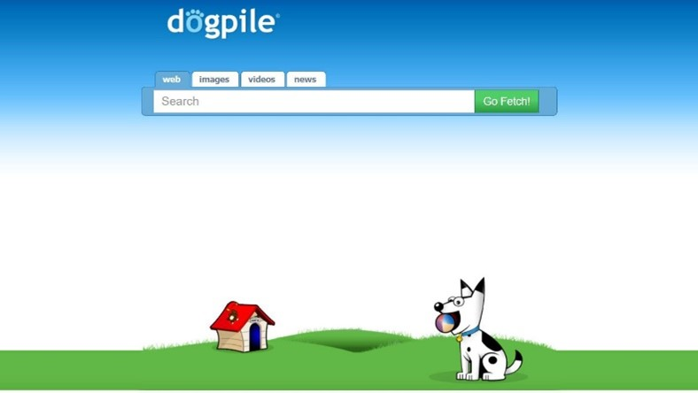
Caracteristicas:
Tiene unos filtros específicos que podemos explotar.
En la parte superior, tenemos las etiquetas de Web,
Imágenes, Videos, Noticias o Páginas amarillas.
La diferencia con el resto de los motores de búsquedas,
además de que utiliza varias fuentes en una búsqueda directa,
es la posibilidad de personalizar el buscador y dejarlo así
para el resto de los resultados y búsquedas que realices de
aquí en más.
La opción de colocar unas búsquedas básicas, moderadas o
estrictas hacen que podamos elegir de qué manera limitar las
búsquedas e ir a cosas más específicas.
Atajos:
Cerrar la pestaña actual Ctrl +W
Abrir hipervínculos en una nueva pestaña Ctrl + clic en el vinculo
Ir a la barra de direcciones Ctrl + L
Volver a cargar la página actual Ctrl + R
URL:
Dogpile
Compañia:
Go2net tiempo después fue adquirida por InfoSpace.
Compatibilidad de software:
Internet Explorer, Google Chrome, entre otros.
Volver al Inicio
Fecha de creación:
1999 Halmstad , Hallands Lan , Suecia
Logo e imagen:
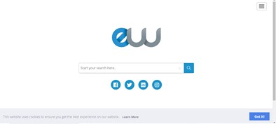
Caracteristicas:
Tiene una buena primera impresión, es juvenil, accesible,
permite modificar el fondo de la primera pantalla según el
gusto del usuario, lo que lo hace sentir cercano y personalizado
y como que entiende tus gustos y necesidades.
Es un buscador sueco potente, versátil y con una interfaz muy
cuidada, quizá de las mejores para mi gusto. Por defecto añade
miniaturas de las páginas en los resultados. Permite variados
filtros para la información, sugiere búsquedas relacionadas y
añade un comentario de la Wikipedia a un lado de la página para
completar la información. Uno de los más interesantes y cómodos
de utilizar.
Atajos:
Buscar todos los mensajes (Búsqueda global): Ctrl + K
Barra de filtrado rápido: Ctrl + Mayús + F
Buscar mensajes en una carpeta (diálogo de búsqueda): Ctrl + Mayús + F
Buscar texto en el mensaje actual: Ctrl + F
URL:
EntireWeb
Compañia:
Empresa sueca llamada Entireweb Sweden AB.
Compatibilidad de software:
Google Chrome, Mozilla Firefox, Internet Explorer
Volver al Inicio
Fecha de creación:
20 de abril de 1994
Logo e imagen:
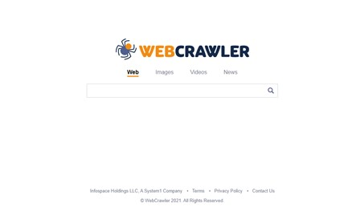
Caracteristicas:
Es un metabuscador que combina la búsquedas tope de Google, Yahoo!,
Bing (antes MSN Search), Ask.com, About.com, MIVA, LookSmart y
otros motores de búsqueda populares. WebCrawler también proporciona
a los usuarios la opción de búsqueda de imágenes, audio, vídeo,
noticias, páginas amarillas y páginas blancas. WebCrawler es una
marca registrada de InfoSpace. Inc.
Atajos:
Cerrar la pestaña actual Ctrl +W
Abrir hipervínculos en una nueva pestaña Ctrl + clic en el vinculo
Ir a la barra de direcciones Ctrl + L
Volver a cargar la página actual Ctrl + R
URL:
Webcrawler
Compañia:
Brian Pinkerton en la Universidad de Washington.
Fue comprado por America Online el 1 de junio de 1995 y
vendido a Excite el 1 de abril de 1997. WebCrawler fue adquirido
por InfoSpace en 2001 y más tarde renombrado como Excite, en ese
entonces llamado Excite@Home.
Compatibilidad de software:
Google Chrome, Internet Explorer.
Volver al Inicio
Fecha de creación:
25 de septiembre de 2008
Logo e imagen:
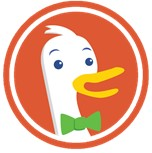
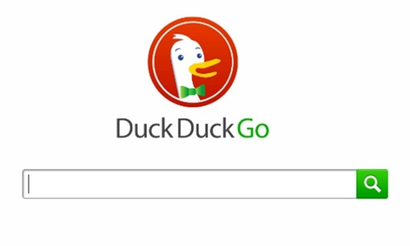
Caracteristicas:
DuckDuckGo trabaja en asociación con Yahoo!, esta asociación le
permitió incorporar un filtrado de búsqueda sobre la base de fechas
y, además, en los resultados de un sitio mostrar enlaces que
facilitan acceder a sus subsecciones.
Nos ayuda diversificar el uso de plataformas, no nos rastrea,
No guarda nuestros datos. Tiene un ¡bangs.
Respuestas automáticas.
Se puede elegir entre modo claro y oscuro, íconos, tipo y
tamaño de la tipografía, el idioma, paginación, etc.
Atajos:
1g para Google, !w para Wikipedia, !a Amazon, ¡Tw Twitter,
¡ste Steam, entre otros.
URL:
Duck Duck Go
Compañia:
DuckDuckGo Inc.
Compatibilidad de software:
Google Chrome
Volver al Inicio
Fecha de creación:
20 de abril de 1994
Logo e imagen:
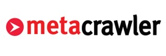
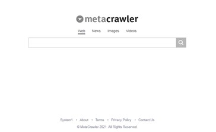
Caracteristicas:
Esta es una poderosa herramienta de búsqueda que a diferencia de
los buscadores clásicos como Yahoo y los Robots como Altavista no
mantiene una base de datos propia, sino que envía las consultas
formuladas por los internautas a otros buscadores que si tienen
bases de datos: Open Text, Lycos, Alta Vista, Web Crawler, Hobbot,
InfoSeek, Excite, Deja News, Inktomi, Yahoo y Galaxy.
La ventaja de los Metabuscadores es que normalmente nos ahorran
el tener que ir consultado uno a uno a los demás buscadores.
Atajos:
Cerrar la pestaña actual Ctrl +W
Abrir hipervínculos en una nueva pestaña Ctrl + clic en el vinculo
Ir a la barra de direcciones Ctrl + L
Volver a cargar la página actual Ctrl + R
URL:
Metacrawler
Compañia:
Blucora
Compatibilidad de software:
Educativo, Profesional (de oficina), Oficinas de enseñanza
informática, entre otros. Algunos buscadores: Google Chrome.
Volver al Inicio
Fecha de creación:
Desconocido
Logo e imagen:
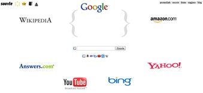
Caracteristicas:
En primer lugar, una opción muy simple y artesanal, Soovle.
Su particularidad es que muestra palabras clave asociadas a nuestra
búsqueda en varios buscadores a la vez. Más concretmente,
en Wikipedia, Answers, Google, YouTube, Bing, Amazon y Yahoo!
Además de poder buscar las veces que quieras, las palabras y
conceptos relacionados son interactivos, es decir, que al hacer
clic te llevarán al resultado de esa búsqueda en el buscador
donde aparece. Así verás qué contenido está mejor posicionado.
Otra curiosidad de Soovle es que permite ver las palabras clave
más buscadas en los buscadores que integra, de la A a la Z.
Lo malo es que tiene en cuenta solamente los resultados genéricos,
por lo que no podemos filtrar por país o idioma.
Atajos:
Cerrar la pestaña actual Ctrl +W
Abrir hipervínculos en una nueva pestaña Ctrl + clic en el vinculo
Ir a la barra de direcciones Ctrl + L
Volver a cargar la página actual Ctrl + R
URL:
Soovle
Compañia:
Desconocida
Compatibilidad de software:
Educativo, Profesional (de oficina), Oficinas de enseñanza
informática, entre otros. Algunos buscadores: Google Chrome.
Volver al Inicio
Fecha de creación:
1996
Logo e imagen:
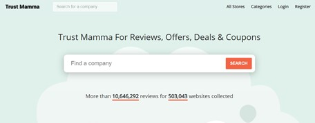
Caracteristicas:
El buscador Mamma.com es un servicio que, mediante tecnología
propia, envía consultas simultáneas a los diez principales
buscadores del mundo, presentando los resultados organizados en
rden de relevancia y clasificados según la fuente (buscador) que
los encontró.
En su sitio web, Mamma.com describe el servicio como
especializado en las metabúsquedas, explicando que cuando un
usuario digita una consulta, su tecnología la redirige hacia
otros buscadores, y en la medida que va recibiendo los resultados
crea una base de datos virtual, que los formatea y categoriza en
orden de relevancia.
Atajos:
Cerrar la pestaña actual Ctrl +W
Abrir hipervínculos en una nueva pestaña Ctrl + clic en el vinculo
Ir a la barra de direcciones Ctrl + L
Volver a cargar la página actual Ctrl + R
URL:
Mamma
Compañia:
Desconocida
Compatibilidad de software:
Educativo, Profesional (de oficina), Oficinas de enseñanza
informática, entre otros. Algunos buscadores: Google Chrome.
Volver al Inicio
Fecha de creación:
1998
Logo e imagen:
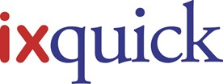
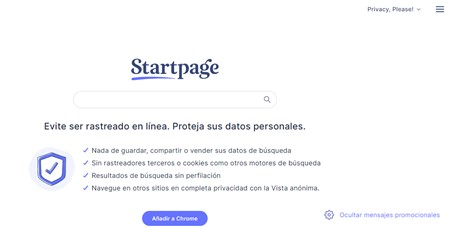
Caracteristicas:
Ixquick (comercialmente estilizado como “ixquick”)
es un metabuscador con sedes en Nueva York y los Países Bajos.
El 7 de julio de 2009, Ixquick lanzó Startpage.com para ofrecer
un servicio a través de una dirección URL más sencilla de recordar
y escribir. Al contrario que ixquick.com, que se trata de un
metabuscador en múltiples servicios, startpage.com sirve los
resultados exclusivamente del motor de búsqueda de Google,
pero sin registrar las direcciones IP de los usuarios ni ofrecer
información personal a los servidores de esta empresa.
Hasta el lanzamiento de la versión 4.5 de Tor Browser,
Startpage.com fue el buscador predeterminado de este navegado.
Atajos:
Cerrar la pestaña actual Ctrl +W
Abrir hipervínculos en una nueva pestaña Ctrl + clic en el vinculo
Ir a la barra de direcciones Ctrl + L
Volver a cargar la página actual Ctrl + R
URL:
Starpage
Compañia:
Surfboard Holding BV
Compatibilidad de software:
Educativo, Profesional (de oficina), Oficinas de enseñanza
informática, entre otros. Algunos buscadores: Google Chrome.
Volver al Inicio
Fecha de creación:
2004 ; Hace 17 años (como Clusty) 2010 ; Hace 11 años
(como Yippy)
Logo e imagen:
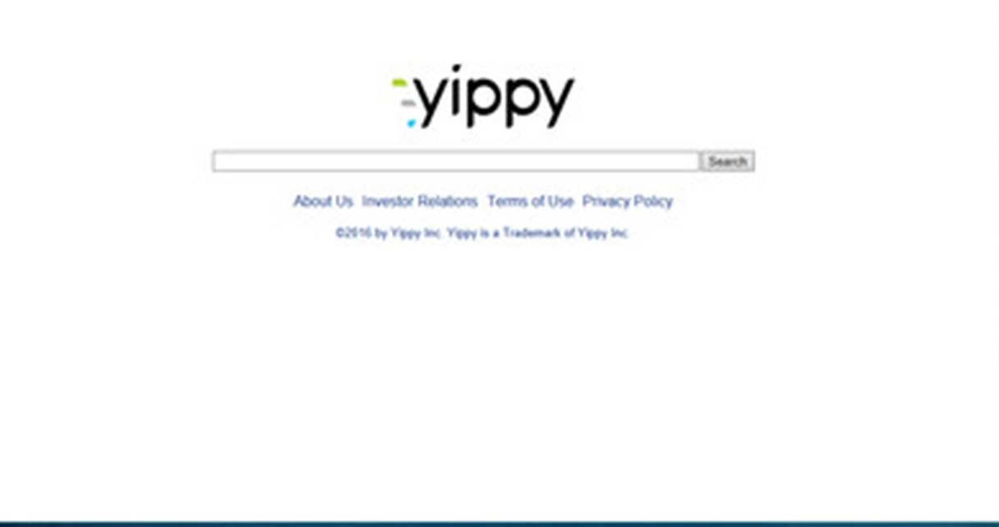
Caracteristicas:
Punto de búsqueda y recuperación de la información centralizado y
seguro para toda la información de la organización,
con indiferencia del repositorio donde se almacena y gestiona,
así como de su formato e idioma.
Capacidades similares y superiores a GSA
Rápida instalación configuración sin necesidad de diseñar planes de
proyecto complejos
Búsqueda segura: Seguridad a nivel de acceso a la plataforma,
permisos sobre un índice, documento o campo del documento,
con integración LDAP y SSO.
Migración rápida y sencilla de GSA a Yippy
Personalización flexible de las interfaces de usuario
Integración con otros sistemas mediante XML y API-Rest
Solución en Appliance y Cloud
Modelo de licenciamiento similar al de GSA en su opción Appliance
Precio competitivo
Atajos:
Cerrar la pestaña actual Ctrl +W
Abrir hipervínculos en una nueva pestaña Ctrl + clic en el vinculo
Ir a la barra de direcciones Ctrl + L
Volver a cargar la página actual Ctrl + R
URL:
Yippy
Compañia:
Vivisimo
Compatibilidad de software:
Educativo, Profesional (de oficina), Oficinas de enseñanza
informática, entre otros. Algunos buscadores: Google Chrome.
Volver al Inicio
Fecha de creación:
Desconocida
Logo e imagen:
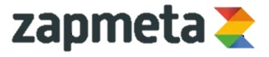
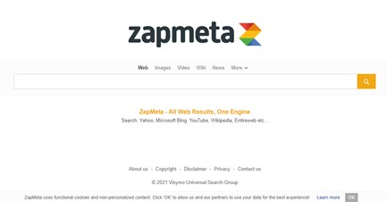
Caracteristicas:
Es un metabuscador de reciente aparición, simple y amistoso.
Permite seleccionar los buscadores que consulta, así como acceder,
mediante la opción Quick View a la página de un resultado sin salir
de la lista completa de resultados.
No tienen una base de datos propia. Su objetivo se basa en la
optimización de tiempos de respuesta. Existe cierta incertidumbre
sobre sus métodos de combinación de buscadores, obtención de pesos,
obtención de orden de resultados, etc.
Atajos:
Cerrar la pestaña actual Ctrl +W
Abrir hipervínculos en una nueva pestaña Ctrl + clic en el vinculo
Ir a la barra de direcciones Ctrl + L
Volver a cargar la página actual Ctrl + R
URL:
Zapmeta
Compañia:
Desconocida
Compatibilidad de software:
Educativo, Profesional (de oficina), Oficinas de enseñanza
informática, entre otros. Algunos buscadores: Google Chrome.
Volver al Inicio
Elizalde E. (2019). Dogpile:
Un motor de búsqueda especial. Recuperado el 21/04/2021 de
https://www.aboutespanol.com/dogpile-un-motor-de-busqueda-especial-461008
Sordo I. (2020). Los 30 atajos más útiles para Google Chrome.
Recuperado el 21/04/2021 de
https://blog.hubspot.es/marketing/short-cuts-atajos-utiles-google-chrome
Crunchbase. (2021). Entireweb. Recuperado el 21/04/2021 de
https://www.crunchbase.com/organization/entireweb
SM. (2012). PARA ENCONTRAR DE TODO: BUSCADORES DE INTERNET.
Recuperado el 21/04/2021 de
https://unamentecuriosa.blogspot.com/2012/09/para-encontrar-de-todo-buscadores-de.html
Radios. (2019). Cinco características que nos gustan de Duck Duck Go.
Recuperado el 21/04/2021 de
https://radioslibres.net/cinco-caracteristicas-que-nos-gustan-de-duckduckgo/
Lopez J. (2019). Las palabras adecuadas, las claves del SEO.
Recuperado el 21/041/2021 de
https://blogthinkbig.com/buscadores-palabras-clave-seo
Parthers. (2018). Yippy Search Appliance (YSA), la alternativa tecnológica a
Google Search Appliance (GSA). Recuperado el 21/04/2021 de
DavinciGroup
Estefy. (2015). Metabuscadores. Recuperado el 21/04/2021 de
Metabuscadores
Volver al Inicio